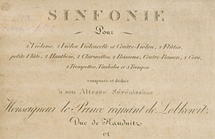
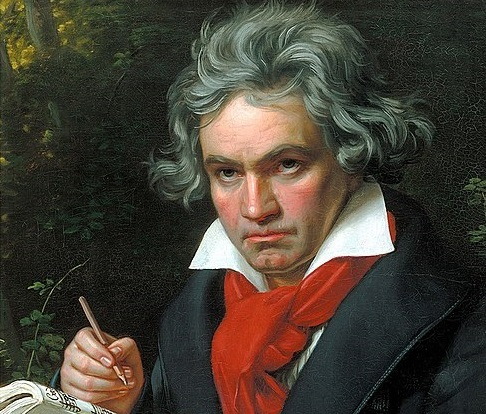

First performed in Vienna's Theater an der Wien in 1808
Is a historic theatre in Vienna located on the Left Wienzeile in the Mariahilf district. Completed in 1801,
the theatre has hosted the premieres of many celebrated works of theatre, opera, and symphonic music. Since 2006,
it has served primarily as an opera house, hosting its own company.

It is one of the best-known compositions in classical music and one of the most frequently played symphonies
The work achieved its prodigious reputation soon afterward. E. T. A. Hoffmann described the symphony as "one of the
most important works of the time". As is typical of symphonies during the transition between the Classical and Romantic
eras, Beethoven's Fifth Symphony is in four movements.
Click here to listen
Enjoy! Hope you enjoy.

The Theater am Kärntnertor in 1830
Beethoven was flattered by the adoration of Vienna, so the Ninth Symphony was premiered on 7 May 1824 in the
Theater am Kärntnertor in Vienna. The premiere of Symphony No. 9 involved the largest orchestra ever assembled by Beethoven
and required the combined efforts of the Kärntnertor house orchestra, the Vienna Music Society
(Gesellschaft der Musikfreunde), and a select group of capable amateurs. While no complete list of premiere
performers exists, many of Vienna's most elite performers are known to have participated.

Beethoven was almost totally deaf when he composed his Ninth Symphony.
Even so, the symphony is regarded by many critics and musicologists as Beethoven's greatest work and one of the supreme
achievements in the history of music. The symphony was the first example of a major composer using voices in a symphony.
The words are sung during the final (4th) movement of the symphony by four vocal soloists and a chorus. They were taken
from the "Ode to Joy", a poem written by Friedrich Schiller in 1785 and revised in 1803, with text additions made by Beethoven.
In 2001, Beethoven's original, hand-written manuscript of the score, held by the Berlin State Library, was added to the
United Nations Memory of the World Programme Heritage list, becoming the first musical score so designated.
Click here to listen
Enjoy! Hope you enjoy.